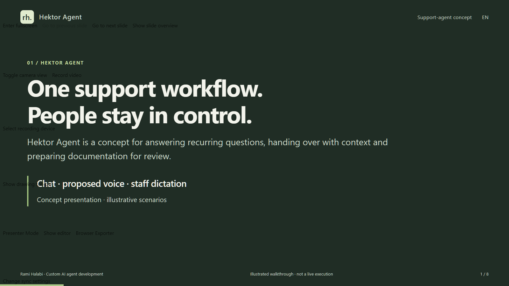
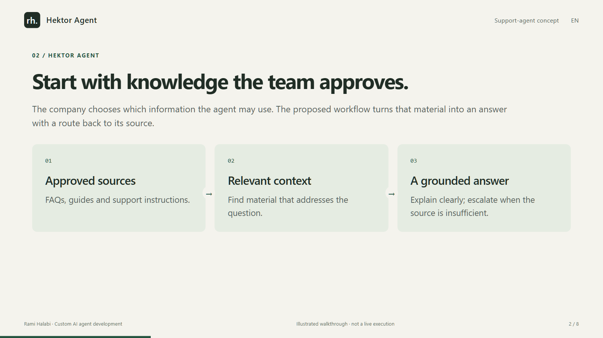
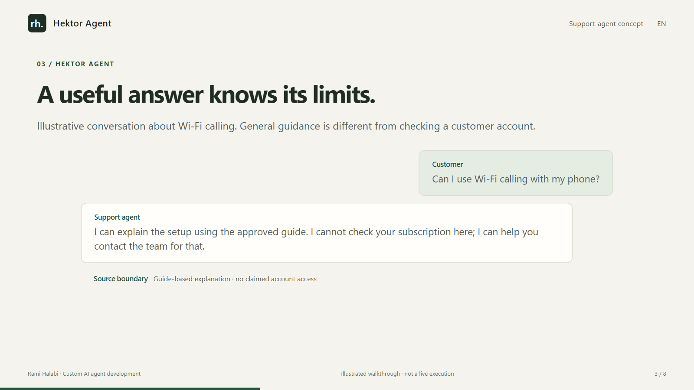
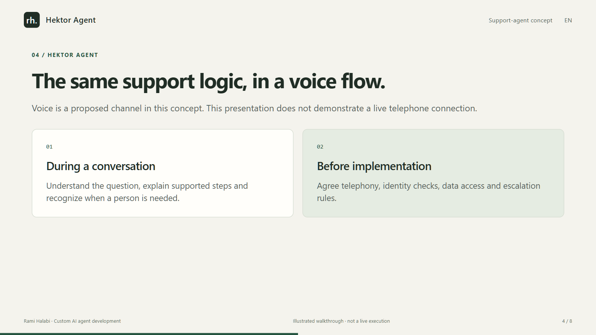
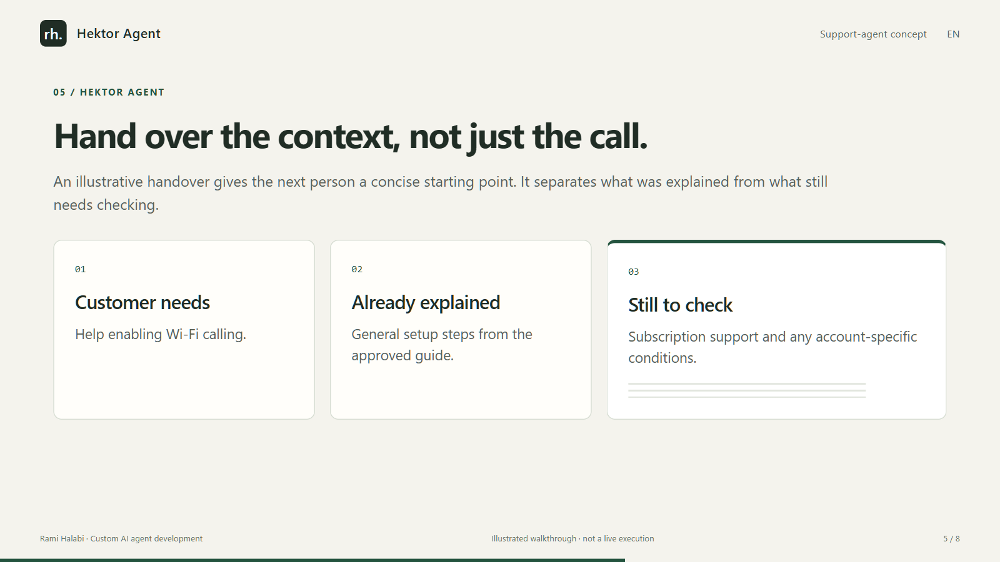
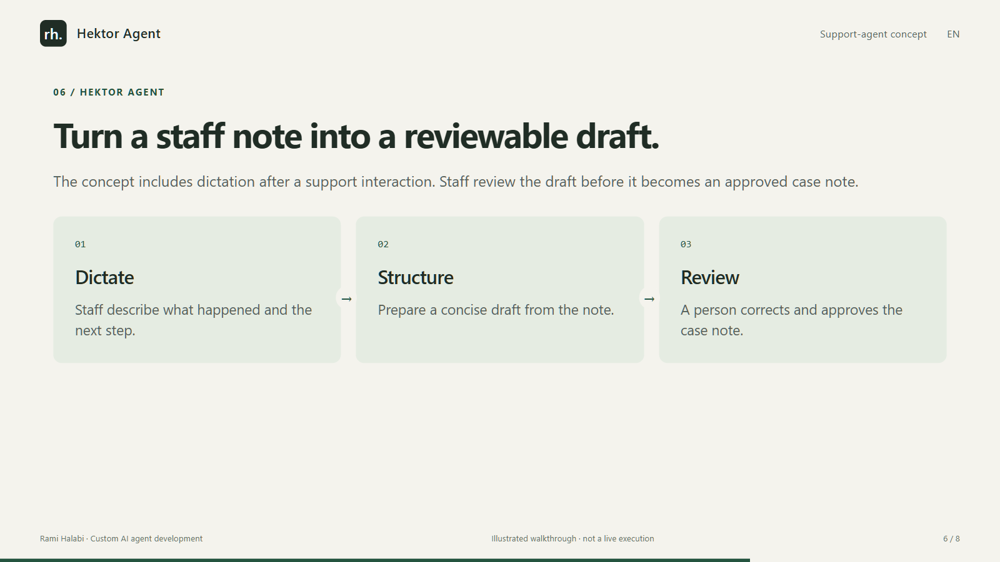
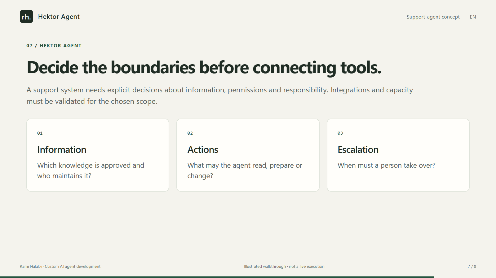
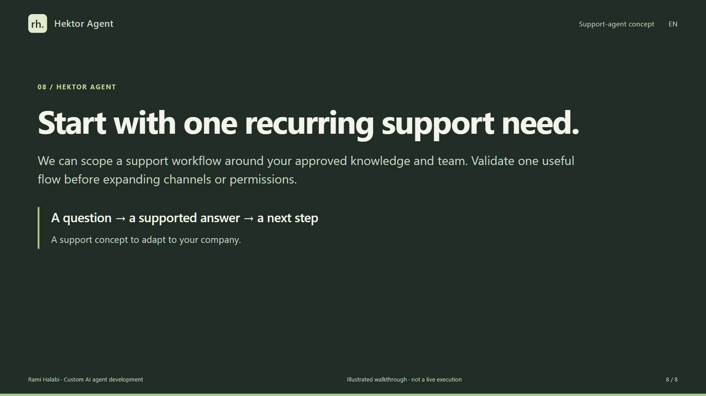

Silent presentation · 2:08
Hektor Agent
Read the full presentation at your own pace. Every slide and its text are included below.
Hektor is the subject of this support concept, not the name of this development business or a verified customer endorsement. Telephone and case-system integrations remain unverified. Examples are illustrative.
Slide 1 / 8 · 0:00–0:16
One support workflow. People stay in control.
Hektor Agent is a concept for answering recurring questions, handing over with context and preparing documentation for review.

- Chat · proposed voice · staff dictation
- Concept presentation · illustrative scenarios
Slide 2 / 8 · 0:16–0:32
Start with knowledge the team approves.
The company chooses which information the agent may use. The proposed workflow turns that material into an answer with a route back to its source.

- Approved sources
- FAQs, guides and support instructions.
- Relevant context
- Find material that addresses the question.
- A grounded answer
- Explain clearly; escalate when the source is insufficient.
Slide 3 / 8 · 0:32–0:48
A useful answer knows its limits.
Illustrative conversation about Wi-Fi calling. General guidance is different from checking a customer account.

- Customer
- Can I use Wi-Fi calling with my phone?
- Support agent
- I can explain the setup using the approved guide. I cannot check your subscription here; I can help you contact the team for that.
- Source boundary
- Guide-based explanation · no claimed account access
Slide 4 / 8 · 0:48–1:04
The same support logic, in a voice flow.
Voice is a proposed channel in this concept. This presentation does not demonstrate a live telephone connection.

- During a conversation
- Understand the question, explain supported steps and recognize when a person is needed.
- Before implementation
- Agree telephony, identity checks, data access and escalation rules.
Slide 5 / 8 · 1:04–1:20
Hand over the context, not just the call.
An illustrative handover gives the next person a concise starting point. It separates what was explained from what still needs checking.

- Customer needs
- Help enabling Wi-Fi calling.
- Already explained
- General setup steps from the approved guide.
- Still to check
- Subscription support and any account-specific conditions.
Slide 6 / 8 · 1:20–1:36
Turn a staff note into a reviewable draft.
The concept includes dictation after a support interaction. Staff review the draft before it becomes an approved case note.

- Dictate
- Staff describe what happened and the next step.
- Structure
- Prepare a concise draft from the note.
- Review
- A person corrects and approves the case note.
Slide 7 / 8 · 1:36–1:52
Decide the boundaries before connecting tools.
A support system needs explicit decisions about information, permissions and responsibility. Integrations and capacity must be validated for the chosen scope.

- Information
- Which knowledge is approved and who maintains it?
- Actions
- What may the agent read, prepare or change?
- Escalation
- When must a person take over?
Slide 8 / 8 · 1:52–2:08
Start with one recurring support need.
We can scope a support workflow around your approved knowledge and team. Validate one useful flow before expanding channels or permissions.

- A question → a supported answer → a next step
- A support concept to adapt to your company.